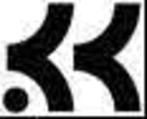

Trade Mark Journal No.2025/009 28 February 2025
UK00004161441 17 February 2025 (25,36,41)

International priority date claimed: 27 January 2025
(United States of America)
(99019366)
- Class 25
- Leggings; T-shirts; Shirts; Rugby shirts; Knit shirts; Athletic shirts; Night shirts; Dress shirts; Sweat shirts; Polo shirts; Woven shirts; Long-sleeved shirts; Hooded sweat shirts; Sports shirts with short sleeves; Athletic apparel, namely, shirts, pants, jackets, footwear, hats and caps, athletic uniforms; Athletic shorts; Athletic tights; Running gloves; Gloves as clothing; Socks; Jerseys being clothing; Sports jerseys; Pants; Sweat pants; Headwear, namely, caps, beanies, baseball caps, hats and visors being headbands; Sweatbands; Headbands; Cycling shorts; Footwear, namely, flip-flops; Sweat jackets; Loungewear; Boxer shorts; Shorts; Wrist bands as clothing.
- Class 36
- Charitable services, namely, fundraising services by means of organizing special events for the benefit of youth sports programs and mental health programs; Charitable services, namely, fundraising services by means of organizing special events for mental health and sports training programs.
- Class 41
- Educational services, namely, providing programs that provide information, guides and resources in the fields of mental health and well-being; Sports training; Organizing community sporting and cultural events; Arranging and conducting of sports events; Organizing, arranging, and conducting programs featuring recreational activities and athletic, physical and sports training sporting events.
Klinic Kids, Inc.
Representative: Wedlake Bell LLP